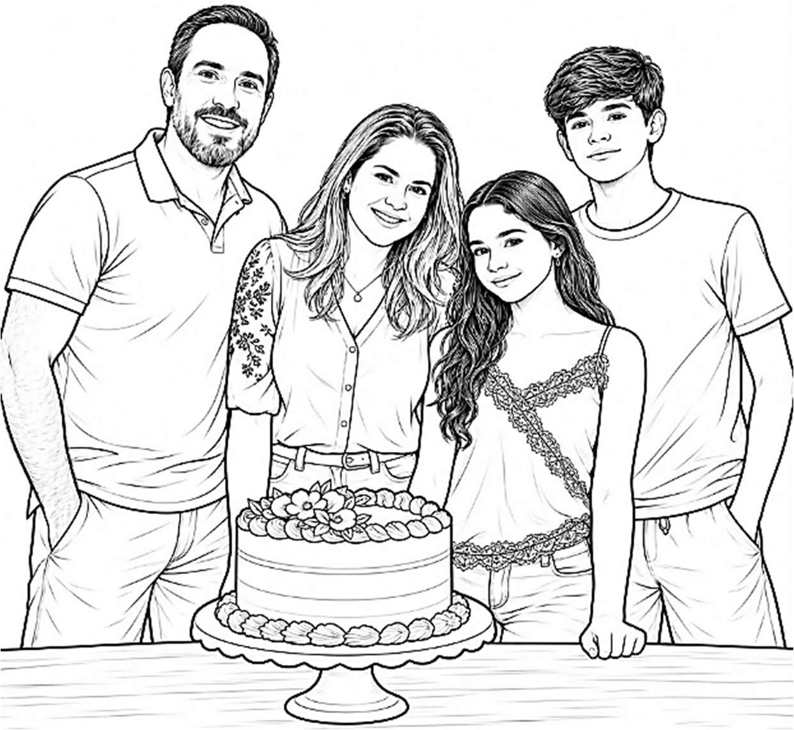

Uma Família Apaixonada por Bolo

Juliana e Luis Gustavo formaram uma linda família, unida também por um carinho especial pelos bolos da avó Zelinda. Davi e Laura, os pequenos da família, sabem que os bolos preparados pela bisa têm um sabor diferente: aquele que vem acompanhado de cuidado, generosidade e muito amor.
Nas comemorações de aniversário, o bolo ocupa um lugar especial. É para ele que se voltam os olhares quando chega a hora de cantar parabéns, reunir todos ao redor da mesa e celebrar mais um ano de vida. Entre
velinhas, sorrisos e fatias servidas com capricho, a receita da Bisa Zelinda ajuda a transformar a ocasião em uma lembrança querida.
E há algo bonito nessa tradição: enquanto os adultos recordam os bolos de outros tempos, Davi e Laura crescem conhecendo esses mesmos sabores. Assim, uma receita preparada pelas mãos de Zelinda continua encontrando lugar na história da família, aproximando gerações e criando memórias que poderão ser contadas no futuro.
Porque, quando uma família se reúne em torno de um bolo feito em casa, cada fatia oferece uma oportunidade de compartilhar carinho. E os bolos da Bisa Zelinda têm justamente esse dom: tornar os momentos especiais ainda mais doces.
Modo de preparo
Bata no liquidificador a cenoura, o óleo, o açúcar e as gemas, até obter uma mistura homogênea. Em uma tigela, junte a farinha e o fermento ao creme batido, misturando delicadamente. Por último, incorpore as claras em neve, com cuidado para preservar a leveza da massa. Despeje em uma forma untada e leve ao forno para assar.
É uma receita simples, daquelas em que cada ingrediente tem sua hora de entrar. E talvez esteja aí um dos segredos de um bom bolo: respeitar o tempo e o jeito de cada coisa, até que a mistura se transforme em algo que reúne todos ao redor da mesa.
Cobertura
4 colheres (sopa) de açúcar 1 colher (sopa) de manteiga
3 colheres (sopa) de chocolate em pó
4 colheres (sopa) de leite
Colocar no fogo para ferver, despejar no bolo já assado e ainda quente.